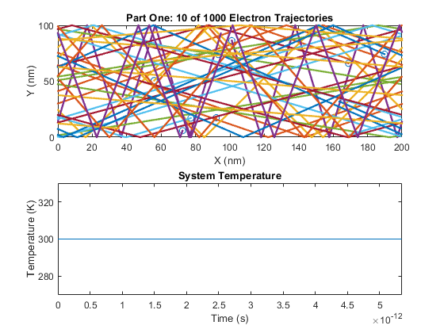
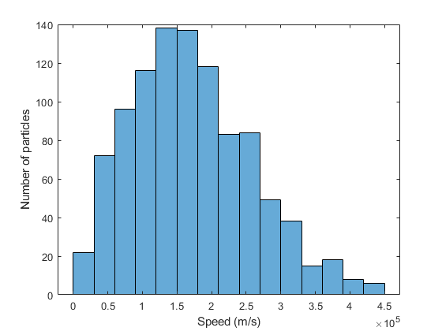
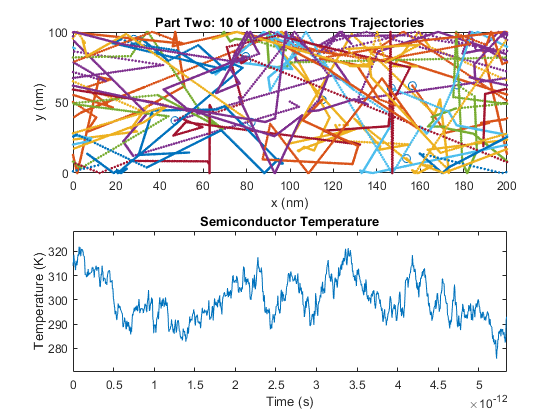
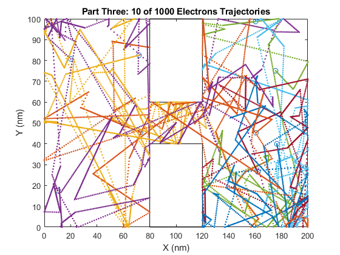
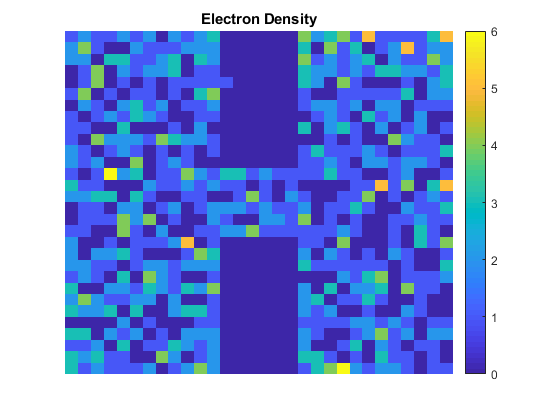
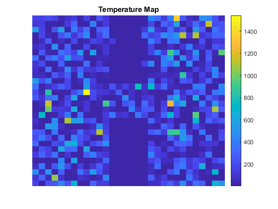

ELEC 4700 Assignment 1
Contents
Nathan Lavoy
100995612
Sumbitted: Feb 2, 2019
Part One: Electron Modelling
% Simulation parameters m0 = 9.10938356e-31; % Rest mass of electron(kg) m = 0.26*m0; % Effective mass of elctrons T = 300; % Temperature(K) k = 1.38064852e-23; % Boltzmann constant tmn = 0.2e-12; % Mean time between collisions vth = sqrt(2*k*T/m); % Thermal Velocity in a 2D space lambda = vth*tmn; % Mean free path w = 200e-9; % Simulation width h = 100e-9; % Simulation height partNum = 1000; % Number of particles in simulation plotNum = 10; % Number of particles shown in plot dt = h/vth/100; % Time step iter = 1000; % Number of iterations % Simulation state [width, height, xv, yv] state = zeros(partNum, 4); traj = zeros(iter,plotNum*2); temp = zeros(iter,1); % Random Maxwell-Boltzmann distribution MB_pdf = makedist('Normal','mu', 0, 'sigma', sqrt(k*T/m)); pScat = 1 - exp(-dt/tmn); totalCol = 0; % Total number of collisions
a) The thermal velocity is 187.02 km/s
b) The mean free path is 37.404 nm
% Initialize the elements for i=1:partNum angle = 2*pi*rand; % random generated angle state(i,:) = [w*rand h*rand vth*cos(angle) vth*sin(angle)]; end % Main loop for i = 1:iter %New displacement dx = dt*state(:,3); dy = dt*state(:,4); state(:,1) = state(:,1) + dx; state(:,2) = state(:,2) + dy; % Width check - should enter the other side with no loss % Leaving right check = state(:,1) > w; state(check,1) = 0; % Leaving left check = state(:,1) < 0; state(check,1) = w; % Height check - spectral reflection % Top check = state(:,2) > h; state(check,2) = h; state(check,4) = -state(check,4); % Bottom check = state(:,2) < 0; state(check,2) = 0; state(check,4) = -state(check,4); %System temperature temp(i) = (sum(state(:,3).^2) + sum(state(:,4).^2))*m/k/2/partNum; % Record the trajectories for j=1:plotNum traj(i, (2*j):(2*j+1)) = state(j, 1:2); end %Simulation one plot figure(1); subplot(2,1,1); hold off; % Plots current electron positions plot(state(1:plotNum,1)./1e-9, state(1:plotNum,2)./1e-9, 'o'); axis([0 w/1e-9 0 h/1e-9]); title(sprintf('Part One: %d of %d Electrons', plotNum, partNum)); xlabel('x (nm)'); ylabel('y (nm)'); subplot(2,1,2); hold off; % Plots current system position plot(dt*(0:i-1), temp(1:i)); axis([0 dt*iter min(temp)*0.90 max(temp)*1.1]); title('System Temperature'); xlabel('Time (s)'); ylabel('Temperature (K)'); end % re plots figure one with trajectories figure(1); subplot(2,1,1); title(sprintf('Part One: %d of %d Electron Trajectories', plotNum, partNum)); xlabel('X (nm)'); ylabel('Y (nm)'); axis([0 w/1e-9 0 h/1e-9]); hold on; for i=1:plotNum plot(traj(:,i*2)./1e-9, traj(:,i*2+1)./1e-9, '.'); end
As seen in the simulation temperature remains constant as the system never changes unlike in part two.
Part Two: Collisions with Mean Free Path (MFP)
% Initialize the elements for i=1:partNum angle = 2*pi*rand; % random generated angle state(i,:) = [w*rand h*rand random(MB_pdf) random(MB_pdf)]; end % Show speed histogram figure(2); v = sqrt(state(:,3).^2 + state(:,4).^2); title('Histogram of Electron Speeds'); histogram(v); xlabel('Speed (m/s)'); ylabel('Number of particles'); % Main loop for i = 1:iter %Calculate new displacement dx = dt*state(:,3); dy = dt*state(:,4); state(:,1) = state(:,1) + dx; state(:,2) = state(:,2) + dy; % Width check - should enter the other side with no loss % Leaving right check = state(:,1) > w; state(check,1) = 0; % Leaving left check = state(:,1) < 0; state(check,1) = w; % Height check - spectral reflection % Top check = state(:,2) > h; state(check,2) = h; state(check,4) = -state(check,4); % Bottom check = state(:,2) < 0; state(check,2) = 0; state(check,4) = -state(check,4); % Scatter particles using exponential scattering probability p = rand(partNum, 1) < pScat; state(p,3:4) = random(MB_pdf, [sum(p),2]); totalCol = totalCol + sum(p(:)==1); % Record the temperature temp(i) = (sum(state(:,3).^2) + sum(state(:,4).^2))*m/k/2/partNum; % Record the trajectories for j=1:plotNum traj(i, (2*j):(2*j+1)) = state(j, 1:2); end % Simulation two plot figure(3); subplot(2,1,1); hold off; % Plot current particle positions plot(state(1:plotNum,1)./1e-9, state(1:plotNum,2)./1e-9, 'o'); axis([0 w/1e-9 0 h/1e-9]); title(sprintf('Part Two: %d of %d Electrons', plotNum, partNum)); xlabel('x (nm)'); ylabel('y (nm)'); subplot(2,1,2); hold off; % Plot system temperature plot(dt*(0:i-1), temp(1:i)); axis([0 dt*iter min(temp)*0.98 max(temp)*1.02]); title('System Temperature'); xlabel('Time (s)'); ylabel('Temperature (K)'); end % Plot trajectories figure(3); subplot(2,1,1); title(sprintf('Part Two: %d of %d Electrons Trajectories', plotNum, partNum)); xlabel('x (nm)'); ylabel('y (nm)'); axis([0 w/1e-9 0 h/1e-9]); hold on; for i=1:plotNum plot(traj(:,i*2)./1e-9, traj(:,i*2+1)./1e-9, '.'); end subplot(2,1,2); hold off; % Plot temperature plot(dt*(0:iter-1), temp); axis([0 dt*iter min(temp)*0.98 max(temp)*1.02]); title('Semiconductor Temperature'); xlabel('Time (s)'); ylabel('Temperature (K)'); 
d) MFP is
tmnMean = (dt*iter)/(totalCol/partNum)
tmnMean = 2.0148e-13
The mean time between collisions is
lambdaMean = vth*tmnMean
lambdaMean = 3.7680e-08
These values have similar magnitudes to the theoretical values but differ in value from the expected values. This means that the simulation is mostly accurate however there is variaiton in each run.
When observing the temperature in this system, it fluctautes due to the rethermalizing particles introducing, or removing heat from the system. The temperature still averages at 300, indicating that the distribution of the new velocities is accurate.
Part Three: Enhancements
% Determines wall property spec = false; % Defines walls boxes = 1e-9.*[80 120 0 40; 80 120 60 100]; % Fill simulation for i = 1:partNum angle = rand*2*pi; state(i,:) = [w*rand h*rand random(MB_pdf) random(MB_pdf)]; % remap illegal particle locations while(invalidPos(state(i,1), state(i,2), boxes)) state(i,1:2) = [w*rand h*rand]; end end % Main loop for i = 1:iter %Calculate new displacement dx = dt*state(:,3); dy = dt*state(:,4); state(:,1) = state(:,1) + dx; state(:,2) = state(:,2) + dy; % Spectral diffusion if (spec) % Top check = state(:,2) > h; state(check,2) = h; state(check,4) = -state(check,4); % Bottom check = state(:,2) < 0; state(check,2) = 0; state(check,4) = -state(check,4); % Left check = state(:,1) < 0; state(check,1) = 0; state(check,3) = -state(check,3); % Right check = state(:,1) > w; state(check,1) = w; state(check,3) = -state(check,3); % Walls for j = 1:partNum % if in box, determine which wall and reset particle if (invalidPos(state(j,1), state(j,2), boxes)) xDist1 = abs(boxes(1,1)-state(j,1)); % Left wall xDist2 = abs(boxes(1,2)-state(j,1)); % Right wall yDist1 = abs(boxes(1,4)-state(j,2)); % Lower wall yDist2 = abs(boxes(2,3)-state(j,2)); % Upper wall wall = min([xDist1 xDist2 yDist1 yDist2]); if (xDist1 == wall) state(j,1) = boxes(1,1); state(j,3) = -state(j,3); elseif (xDist2 == wall) state(j,1) = boxes(1,2); state(j,3) = -state(j,3); elseif (yDist1 == wall) state(j,2) = boxes(1,4); state(j,4) = -state(j,4); elseif (yDist2 == wall) state(j,2) = boxes(2,3); state(j,4) = -state(j,4); end end end % Scatter particles j = rand(partNum, 1) < pScat; state(j,3:4) = random(MB_pdf, [sum(j),2]); % Rethermalizing - assign new random velocity after wall collision else % Top check = state(:,2) > h; state(check,2) = h; val = random(MB_pdf); state(check,3) = random(MB_pdf, [sum(check),1]); state(check,4) = 0 - abs(random(MB_pdf, [sum(check),1])); % Bottom check = state(:,2) < 0; state(check,2) = 0; state(check,3) = random(MB_pdf, [sum(check),1]); state(check,4) = abs(random(MB_pdf, [sum(check),1])); % Left check = state(:,1) < 0; state(check,1) = 0; state(check,3) = abs(random(MB_pdf, [sum(check),1])); state(check,4) = random(MB_pdf, [sum(check),1]); % Right check = state(:,1) > w; state(check,1) = w; state(check,3) = random(MB_pdf, [sum(check),1]); state(check,4) = 0-abs(random(MB_pdf, [sum(check),1])); % Walls for j = 1:partNum val = random(MB_pdf); if (invalidPos(state(j,1), state(j,2), boxes)) xDist1 = abs(boxes(1,1)-state(j,1)); % Left wall xDist2 = abs(boxes(1,2)-state(j,1)); % Right wall yDist1 = abs(boxes(1,4)-state(j,2)); % Lower wall yDist2 = abs(boxes(2,3)-state(j,2)); % Upper wall wall = min([xDist1 xDist2 yDist1 yDist2]); if (xDist1 == wall) state(j,1) = boxes(1,1); state(j,3) = 0-abs(random(MB_pdf)); state(j,4) = random(MB_pdf); elseif (xDist2 == wall) state(j,1) = boxes(1,2); state(j,3) = abs(random(MB_pdf)); state(j,4) = random(MB_pdf); elseif (yDist1 == wall) state(j,2) = boxes(1,4); state(j,3) = random(MB_pdf); state(j,4) = abs(random(MB_pdf)); elseif (yDist2 == wall) state(j,2) = boxes(2,3); state(j,3) = random(MB_pdf); state(j,4) = 0-abs(random(MB_pdf)); end end end % Scatter particles j = rand(partNum, 1) < pScat; state(j,3:4) = random(MB_pdf, [sum(j),2]); end % Record temperatures temp(i) = (sum(state(:,3).^2) + sum(state(:,4).^2))*m/k/2/partNum; % Record positions for subset of particles that will be graphed for j=1:plotNum traj(i, (2*j):(2*j+1)) = state(j, 1:2); end % Simulation 3 figure(4); hold off; plot(state(1:plotNum,1)./1e-9, state(1:plotNum,2)./1e-9, 'o'); hold on; % Plot the boxes for j=1:size(boxes,1) plot([boxes(j, 1) boxes(j, 1) boxes(j, 2) boxes(j, 2) boxes(j, 1)]./1e-9,... [boxes(j, 3) boxes(j, 4) boxes(j, 4) boxes(j, 3) boxes(j, 3)]./1e-9, 'k-'); end axis([0 w/1e-9 0 h/1e-9]); title(sprintf('Part Three: %d of %d Electrons', plotNum, partNum)); xlabel('x (nm)'); ylabel('y (nm)'); end % Show trajectories figure(4); title(sprintf('Part Three: %d of %d Electrons Trajectories', plotNum, partNum)); xlabel('X (nm)'); ylabel('Y (nm)'); axis([0 w/1e-9 0 h/1e-9]); hold on; for i=1:plotNum plot(traj(:,i*2)./1e-9, traj(:,i*2+1)./1e-9, '.'); end % Electron Density density = hist3(state(:,1:2),[30 30])'; figure(5); imagesc(density); title('Electron Density'); axis off; xlabel('x (nm)'); ylabel('y (nm)'); colorbar; % Temperature calculation tempDen = zeros(30,30); partDen = zeros(30,30); binX = 0:w/30:w; binY = 0:h/30:h; %Breakup space into grids and add a particles temp the grid it appears in for i = 1:partNum for n = 1:30 for p = 1:30 if (state(i,1) > binX(n) && state(i,1) <= binX(n+1) && state(i,2) > binY(p) && state(i,2) <= binY(p+1)) tempDen(n,p) = tempDen(n,p) + (state(i,3)^2 + state(i,4)^2)*m/k/2; partDen(n,p) = partDen(n,p) + 1; end end end end % Electron Density figure(6); imagesc((tempDen./partDen)'); title('Temperature Map'); axis off; xlabel('x (nm)'); ylabel('y (nm)'); colorbar; % Used to determine if particle is in the boxes function val = invalidPos(x, y, boxes) val = false; if (x > boxes(1,1) && x < boxes(1,2) && y > boxes(1,3) && y < boxes(1,4)) val = true; elseif (x > boxes(2,1) && x < boxes(2,2) && y > boxes(2,3) && y < boxes(2,4)) val = true; end end  
Observing the temperature and electron density graphs there is a correlation between temperature and density but the energy of the particular electron in the grid is a larger determinind value in the temperature map.